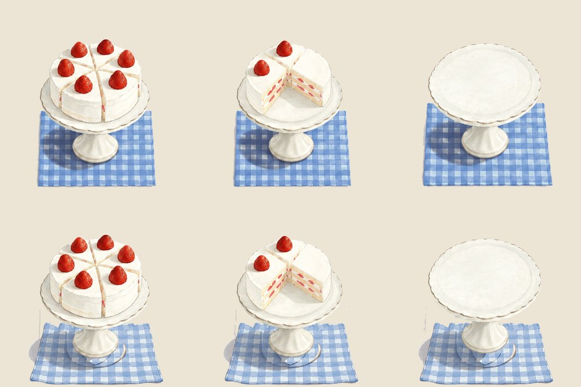
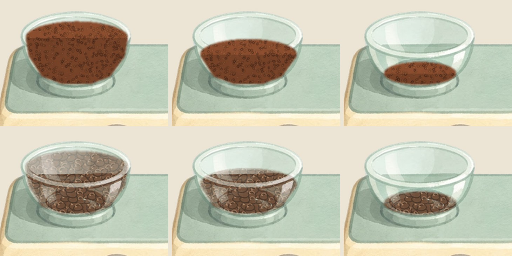
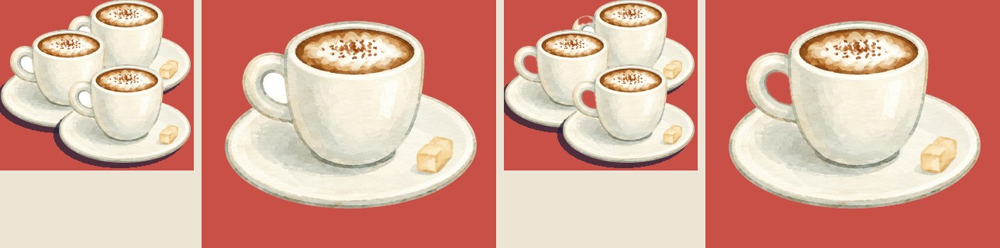
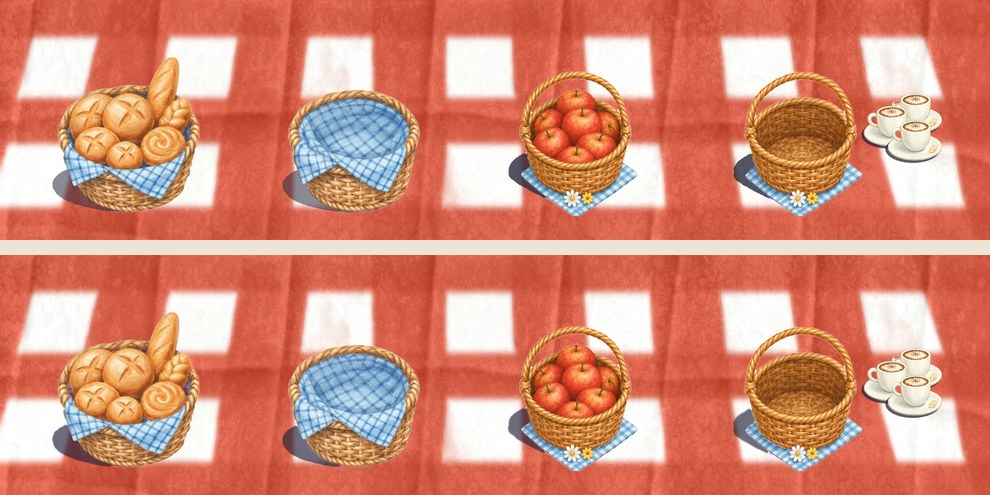

Food Truck Cafe
Your report for 9 November. Version 26.10.26 has been live on the App Store since 27 October.


1Next
You
Pick the two gameplay improvements for the next release (MVP, step 1).
Tick the shadows, beans and cup handles under Current. Say build when the sprites are right and I upload TestFlight build 22 for your play test.
Tick your choices under Q1 to Q4, under Current, and in the Backlog.
Sign in to App Store Connect in Chrome, then say numbers.
Unity Ads: add a payout profile in the Unity dashboard.
Bugs folder: IMG_9758 and IMG_9759 look fixed in 26.10.26; delete them if you agree. The PDF in there is not a game bug.
Me
Main merged and pushed, 9 November: 55 commits, main at 0a73a05. The store build and the four Current changes are all on main now.
Napkin in. Basket shadows, beans and cup handles wait for your tick under Current. No build until you say so.
Round 1 starts when you pick the two improvements: I build them and upload a TestFlight build.
ChatGPT: the cake first, on your word chatgpt cake.
2Q&A
Q1 · Any rewarded ads from real players in the past few days? 9 November
Two, both daily-treat ads watched to the end: one on 3 November and one on 7 November, by two different players. Before that, three on 28 October by two players. The coin button's rewarded ad has never been used. All interstitials so far were skipped.
Q2 · Remove Ads: does it remove the between-day ads? 9 November
Yes. Remove Ads switches off the interstitial between days. The rewarded ads stay, because the player chooses them for a reward (the daily treat, the coin button).
What it needs: you sign the Paid Apps Agreement in App Store Connect (Agreements, Tax and Banking) and create the in-app purchase there; I add Unity IAP, the Remove Ads card in the shop, a Restore Purchases button (Apple requires it) and the flag that skips the interstitial. It is in the MVP.
Q3 · Why is "missing SKAdNetwork ids" still in the Backlog? 9 November
Checked the shipped build: build 21's Info.plist carries 77 SKAdNetwork ids, written by the Unity Ads and Mediation post-build steps. Nothing is missing in the app. The Unity dashboard warning compares against its ever-growing list, so it can say "missing" after any list update; it does not affect ad delivery. Removed from the Backlog.
Q4 · More ideas for the polish release 31 October
3Current
Cake napkin cut in, 9 November. Your tick: ChatGPT's second napkin under all seven cake frames, your cake and stand untouched, the shadow soft and half transparent. On main, commit below; in the next build.

Coffee beans with bean shapes, 9 November. Your word: the hopper fill should show beans with outlines like your drawing, not a chunk of colour. Each of the six fill levels keeps its heap shape and is filled with drawn beans: cocoa ovals, a darker outline, a light seam. Same files, nothing moves. Not in the game yet.

Cup handles see-through, 9 November. Your word: inside the handle should be transparent, not white. Done on the six frames with cups (plate 2, 3, 4, 6, 7 and the big set): the hole inside each handle is cut out, one pixel feathered. Shown on red so the holes are visible. Not in the game yet.

Basket shadows, 9 November. Your rule: a little transparent, not a dark chunk, smooth outline, the saucers as the reference, and the shape of each shadow kept as drawn. So the bread and apple baskets keep their shadow shape; it is now navy at two thirds opacity like the saucers' and its outline is softened. Same files and canvas, nothing moves. Not in the game yet.

The same script can do every table item (cake, cookies plate, coconuts, pots, candy jar, juice, machine tray, ice cream station) so all shadows match. Your own hand-drawn shadows (juice, choux) would change too; say if they should stay.
Done since 31 October, on main, not in a build


4MVP
Your words, 9 November.
- A couple of things to improve gameplay.
- Stars as a currency, and a star shop panel in the shop.
- Remove Ads purchase (the Paid Apps Agreement first).
- At least five rounds of your own play test on TestFlight, feedback after each.
- Store submission on your yes.
5Backlog
Do in the polish release. Unticked items go when you say clean up.
6Analysis, 2 to 8 November
Read 9 November, 10:00 PST. Days are UTC. Players and ads from Unity. App Store Connect is signed out, so Apple's downloads, impressions and page views wait for your sign-in.
| Day | New players | Finished the tutorial | Days finished | Ad requests | Ads shown | Ad revenue |
|---|---|---|---|---|---|---|
| Sun 2 | 0 | 0 | 0 | 0 | 0 | $0 |
| Mon 3 | 2 | 1 | 0 | 6 | 1 | $0.02 |
| Tue 4 | 0 | 0 | 0 | 0 | 0 | $0 |
| Wed 5 | 0 | 0 | 0 | 0 | 0 | $0 |
| Thu 6 | 1 | 0 | 0 | 1 | 0 | $0 |
| Fri 7 | 3 | 0 | 0 | 7 | 2 | $0.02 |
| Sat 8 | 0 | 0 | 0 | 0 | 0 | $0 |
| Week | 6 | 1 | 0 | 14 | 3 | $0.05 |
| Week before, 26 Oct to 1 Nov | 9 | 6 | 21 | 88 | 23 | $0.08 |